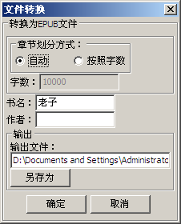
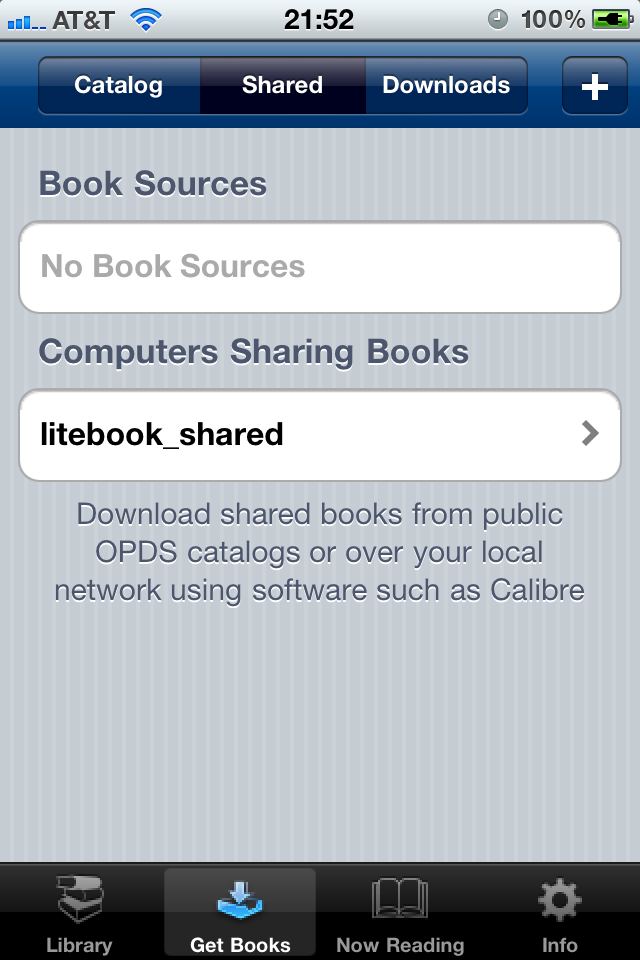

|
上传至移动设备
|
 
|
|
上传至移动设备
|
|
从ver2.3开始，litebook支持将电脑中的书上传到移动设备，目前支持如下移动看书APP：
由于Stanza和iBooks都支持EPUB格式的电子书，因此上传书分为以下步骤：
Stanza的操作步骤:

两种章节划分方式：
注：输出文件的缺省目录就是缺省的共享文件目录，当前文件名会作为新的EPUB文件名。
2.将EPUB文件拷入共享目录，共享目录可以在选项-控制设置里进行选择。如果在第一步中已经将输出文件放在了共享目录中，那么这步可以跳过。
3.启用WEB服务器：通过菜单“工具”-》“启用WEB服务器”
4.打开Stanza程序，在下方的主菜单中选择“Get Books"。缺省情况下Stanza将自动发现litebook的共享源，如下图所示：

选择“litebook_shared“，然后下载图书即可。
如果Stanza无法自动发现litebook的话，也可以按右上方的“+”按钮手动添加源，URL的格式为“http://MY_IP:8000”，其中MY_IP是你电脑的IPv4地址。在windows下可以通过IPCONFIG命令获得，8000是缺省的端口号，你也可以在litebook选项中修改为其他的端口。
iBooks 的操作步骤：
1，2两步和Stanza相同。
3. 打开Safari浏览器，访问http://MY_IP:8000”，其中MY_IP是你电脑的IPv4地址。在windows下可以通过IPCONFIG命令获得，8000是缺省的端口号，你也可以在litebook选项中修改为其他的端口。
4.下载你要的书，下载完毕和选择“用iBooks打开”